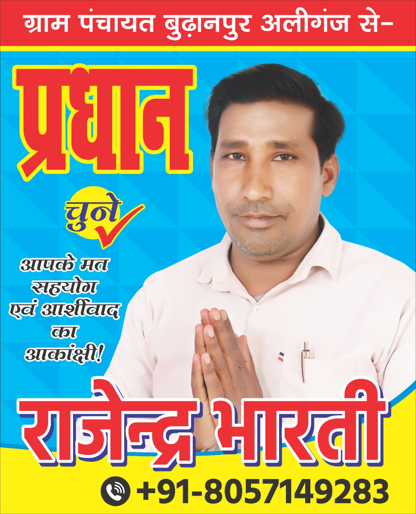

प्रधान चुने , गिरगिट नहीं
जो हर समय रंग बदले |
ग्राम प्रधान चुनाव में बेईमानों का खूब खाये ,
मगर चुनाव किसी शिक्षित और ईमानदार को जिताये |
जो इंसान गरीबो की ना सुने ,
उसे कभी ग्राम प्रधान ना चुने |
ग्राम प्रधान चुनाव में विकास का मुद्दा होता नहीं है ,
इस पद का उम्मीदवार जीत के लिए रात-रात भर सोता नहीं है |
जिसके पास पैसा है , उसी का शोर है ,
बाकि चुनाव में खड़े प्रत्याशी कमजोर हैं |